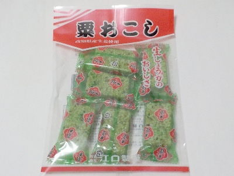
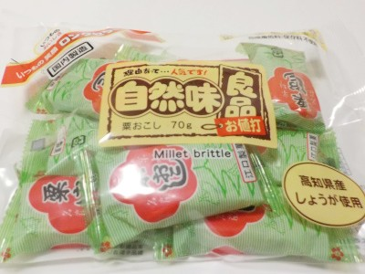

井口製菓の粟おこし
2025/02/12

粟おこしの厚みが1.5センチくらいあるので固いです。
でもその固さがいいんですよね。粟おこしは固いからいいんですよね。
よく噛んで食べるので食べ過ぎない気がします。
京都府京都市南区上鳥羽南戒光町17番地
2025/02/12

粟おこしの厚みが1.5センチくらいあるので固いです。
でもその固さがいいんですよね。粟おこしは固いからいいんですよね。
よく噛んで食べるので食べ過ぎない気がします。
2022/09/03

自然味良品の粟おこしです。70グラム入りで9個入っていました。
仕事の合間に気分転換で飴、グミ、チョコをよく食べるんですが、甘いので糖分がちょっと気になりました。
他にいい商品はないだろうかと探していたら、この商品をみつけました。
この粟おこしはちょっと厚みがあるので固いです。しっかりアゴを使うので目が覚めます。ほどよい塩分と糖分とお米の淡水化物があるので満足感があり、気持ちがちょっと落ち着きました。
ちょっと大きいのでパクっとは食べれないないですが、その分噛んだときの刺激が多くなるのでいいと思いました。